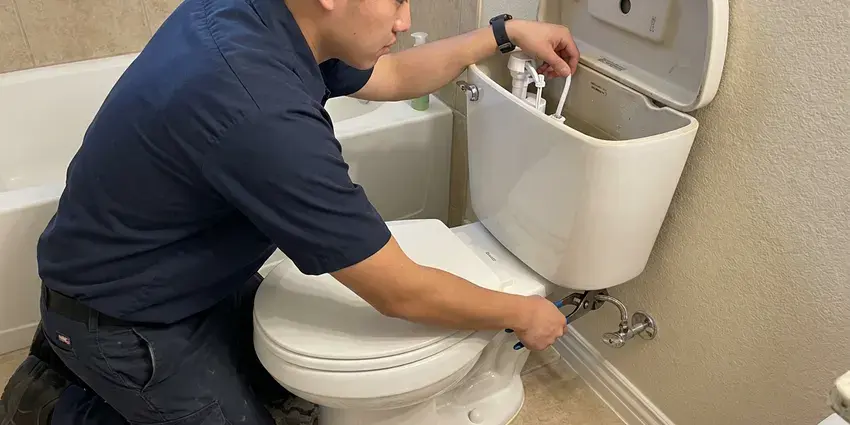
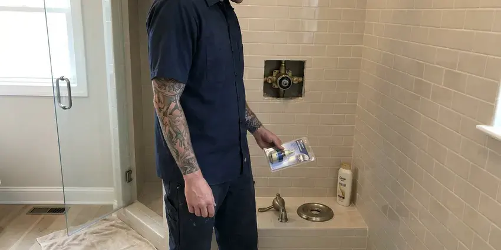

Urinal Installation in Lancaster, CA
Add or replace a urinal in Lancaster, CA with plumbers who handle the rough-in, the carrier and the finish work.
- Fast, reliable service
- Sensor and Manual Flush Valves
- Honest pricing
- Flexible Commercial Scheduling

Professional urinal installation services available now in Lancaster, CA.
Our team is ready to handle your urinal installation needs with skill and care.
Your First Call for Urinal Installation in Lancaster, CA
FKM Plumbing offers complete urinal installation services for businesses and homes across Lancaster, CA. Whether you are upgrading an old unit, renovating a commercial restroom, or adding a new fixture, our skilled plumbers ensure a proper, leak-free setup.
Our expertise includes:
- Precise rough-in and drain connections
- Rough in 2-inch waste lines with proper venting
- ADA-compliant installations

Additional Bathroom Plumbing Services in Lancaster, CA
From toilets to showers, our bathroom plumbing team in Lancaster, CA handles repairs, installs, and upgrades with tidy, code-compliant work.


Toilet Repair service for Lancaster homeowners



Professional shower repair, Lancaster

Customers
Why Choose FKM Plumbing for Urinal Installation in Lancaster, CA?
We understand commercial restroom codes, ADA requirements and fixture counts. That helps your project pass inspection the first time around.
- Water Savings, Low-flow and waterless options cut water use in busy restrooms.
- Inspection Ready, Rough-ins and final sets are built to pass local inspection.
- Code Compliance, We ensure all urinal installations meet Southern California plumbing codes for safety and function.
Citywide Coverage
FKM Plumbing serves every neighborhood and commercial district across Lancaster for urinal installation needs. From downtown businesses to suburban facilities, our plumbers are always ready to help.
Experienced Team
Our plumbing team possesses extensive experience with all types of urinal installations, from standard wall-hung models to more complex trough urinals. They are trained in the latest techniques and equipped with the right tools to get the job done efficiently and correctly.
Safety-First Approach
We always prioritize the safety of your property and our technicians during urinal installation. All work is performed in accordance with Southern California safety guidelines and local Lancaster building codes, giving you confidence.
Trusted Certified Lancaster Plumbing Services Professionals
At FKM Plumbing, we take pride in providing licensed, certified plumbing services throughout Lancaster, CA. Backed by leading industry credentials, our experienced plumbers combine technical skill with genuine customer care. Whether it is repair, installation, or maintenance, we follow strict safety and quality standards to deliver lasting results you can trust.
Call Us Now PHCC Plumbing Contractor Recognition
PHCC Plumbing Contractor Recognition Better Business Bureau (BBB) Accreditation
Better Business Bureau (BBB) Accreditation Angi Certified Pro
Angi Certified Pro ISO 9001 Quality Management Certification
ISO 9001 Quality Management CertificationReliable Urinal Installation Services in Lancaster, CA
Commercial Urinal Installation in Lancaster
FKM Plumbing provides dedicated urinal installation for commercial properties, including offices, restaurants, and public facilities. We understand the need for durable, high-traffic solutions and can install a variety of models, from standard flush to waterless urinals. Our team keeps disruption to your business operations to a minimum during the installation process, focusing on efficiency and compliance with commercial building codes.

ADA-Compliant Urinal Installation in Lancaster
Meeting ADA (Americans with Disabilities Act) guidelines is essential for public and commercial restrooms. FKM Plumbing handles ADA-compliant urinal installations in Lancaster, providing proper height, clear floor space, and grab bar placement where required. Our attention to detail helps businesses provide accessible facilities while adhering to all necessary regulations.
Rough-In Plumbing for Urinals in Lancaster, CA
A successful urinal installation in Lancaster, CA starts with accurate rough-in plumbing. This involves laying out and connecting the supply lines and drain pipes before the walls are closed. Our experts meticulously plan and execute the rough-in, confirming correct pipe sizing, proper venting, and precise placement for the fixture. This groundwork prevents future issues and ensures the urinal functions correctly from day one.
Residential Urinal Installation in Lancaster, CA
While less common, some homeowners in Lancaster, CA opt for urinal installations in their residences, particularly in basement bathrooms or dedicated utility spaces. FKM Plumbing can assist with selecting appropriate residential-grade urinals and completing a clean, functional installation. We consider factors like space, existing plumbing lines, and ventilation to integrate the urinal seamlessly into your home's system.
Waterless Urinal Installation in Lancaster
Waterless urinals are an smart choice for businesses and institutions in Lancaster looking to conserve water and reduce utility bills. FKM Plumbing is skilled at the installation of various waterless urinal brands, ensuring proper sealant cartridge setup and drain line connection. These systems require precise installation to prevent odors and maintain hygiene, which our experts handle with care.
Drainage & Venting for Urinals in Lancaster, CA
Correct drainage and venting are essential for any urinal installation to prevent clogs, odors, and slow draining. FKM Plumbing makes sure that all urinal installations in Lancaster, CA have properly sized and sloped drain lines, as well as adequate vent connections to the main plumbing stack. This careful approach supports strong performance and long-term reliability of your new urinal system.
Sensor Urinal Installation in Lancaster, CA
Touchless sensor flush valves improve hygiene and reduce wasted flushes. We install battery or hardwired sensor valves and set the detection range for each fixture. Hardwired units may need an electrician for the power supply, which we can coordinate. Sensor valves are common in schools, gyms and healthcare offices.

Urinal Replacement and Upgrades in Lancaster, CA
Older urinals often use 1 gallon or more per flush and have cracked or stained bowls. We remove the old fixture, inspect the waste outlet and carrier, and install a modern low-flow model. Sometimes the old carrier can be reused, which lowers cost. Upgrading also improves restroom appearance and odor control.
Trusted Urinal Installation Near Me in Lancaster, CA
Business owners need a plumber who shows up when promised and keeps restrooms open. We schedule urinal installs in Lancaster around your hours, including early mornings and evenings. That keeps disruption to a bare minimum.
Our crews know local permit processes and inspection expectations for commercial restrooms. That speeds up approval for new fixtures and remodels. You get one team for planning, installation and final testing.
FKM Plumbing at a Glance
- Licensed and insured plumbers serving Lancaster, CA
- 24/7 emergency service with same-day scheduling
- Upfront, flat-rate pricing before work begins
- 4.8-star rated by 754+ Southern California customers
Lancaster Map
Lancaster Information
- Population
- 166,236
- Area codes
- 661/442/818
- Service area
- Lancaster and communities within 40 miles
- Nearby
- Palmdale, Santa Clarita, Glendale, Pasadena
Municipal water across much of Southern California is hard, leaving white scale on faucets, showerheads, and inside water heater tanks. Proper urinal installation in Lancaster, CA ensures efficient drainage and keeps mineral buildup from affecting long-term performance.
Expert Services
Trust our professionals for reliable FKM Plumbing solutions in Lancaster, CA.
Our Specialized Plumbing Services in Lancaster, CA
At FKM Plumbing, we provide a complete range of plumbing services across Lancaster, CA. From leak detection to full system installations, our team ensures fast, precise, and affordable service for both residential and commercial properties. Explore our core services below:


How Our Urinal Installation Process Works in Lancaster, CA
FKM Plumbing follows a clear approach to every urinal installation, guaranteeing quality and adherence to all plumbing standards.
Request a Quote
Start by calling (213) 871-0701 or filling out our online form to discuss your urinal installation needs. We'll gather details about your project and schedule a convenient time for an assessment.
On-Site Assessment
A FKM Plumbing plumber will visit your Lancaster property to evaluate the installation site, assess existing plumbing, and confirm the best approach. We'll provide a clear, transparent quote.
Professional Installation
Our experienced technicians will proceed with the urinal installation, ensuring all water lines, drain connections, and mounting hardware are correctly installed and tested. We prioritize cleanliness and efficiency.
Frequently Asked Questions About Urinal Installation in Lancaster
The cost of urinal installation in Lancaster, CA can range from $400 to $1,500, depending on the type of urinal (flush vs. waterless), complexity of plumbing modifications, and labor. Commercial installations with more extensive work might be at the upper end. We provide a written estimate after an on-site assessment.
Signs that your existing urinal might need replacement include frequent clogs, persistent odors despite cleaning, visible cracks or extensive staining, or if it's an older, inefficient model that uses excessive water. Our technicians can assess its condition and explain repair versus replacement.
Regular cleaning with appropriate cleaners is essential for both flush and waterless urinals. Waterless urinals also require periodic replacement of their sealant cartridges, typically every 1 to 3 months depending on usage. Proper maintenance prevents odors and clogs and keeps the fixture sanitary.
We install American Standard, Kohler, Toto, Sloan, Zurn and Falcon waterless fixtures. We can help match a brand to your budget and traffic.
For commercial settings, look for durability, water efficiency (like low-flow or waterless models), easy maintenance, and ADA compliance if applicable. Brands like Sloan and Zurn are popular for their robust commercial-grade fixtures and flushometers.
Most standard urinal installations or replacements can be completed within 2 to 4 hours. However, if new plumbing lines need to be run, or if there are significant structural modifications required, the process could take a full day or more.
While it might seem like a way to save money, urinal installation involves precise plumbing connections, proper venting, and secure mounting that are best handled by a professional. Incorrect installation can lead to leaks, odors, and costly repairs down the line, making professional service a worthwhile investment.
Yes. Home urinals are common in garages and busy bathrooms. We tie into existing drain and vent lines where possible.
What People Are Saying About Our Plumbing Experts?

Laura S.
I scheduled a water heater replacement, and the team made the process smooth and affordable. The new unit works perfectly, and they cleaned up after completing the job.
Water Heater Replacement · Glendale, CASofia M.
Two new toilets installed in one visit, no mess left behind, and the tech even adjusted a faucet he noticed was dripping. Fair pricing and really friendly.
Toilet Installation · Santa Clarita, CA
James P.
Our commercial plumbing system had a leak under the sink, and FKM Plumbing handled it professionally. The plumbers arrived quickly and restored everything without disruption to our customers.
Commercial Plumbing · Glendale, CA
Mark T.
When our office needed drain cleaning, FKM Plumbing provided quick, reliable service. The plumber arrived on time and made sure every drain flowed perfectly before leaving. Very satisfied.
Drain Cleaning · Pasadena, CARobert G.
The trenchless sewer replacement saved our front yard. They walked us through the camera inspection footage first so we knew exactly what we were paying for.
Sewer Line Replacement · Pasadena, CA
Emily R.
I called FKM Plumbing for plumbing repair, and the technician was fast, polite, and thorough. They explained the problem clearly and fixed it the same day. I will definitely hire them again. Highly recommended!
Plumbing Repair · Santa Clarita, CA